Home / Past papers / MLF Quiz 1 / this paper
IIT M QUIZ 1 FOUNDATION DAD DIPLOMA QPD1 16 Oct 2022 - 16 Oct 2022
Elapsed 00:00

- Yes
- No
Note: Enter the answer correct to two decimal places.
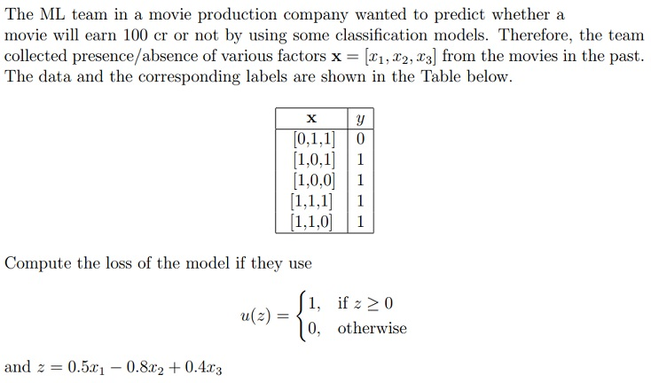
Note: Enter the answer correct to two decimal places.
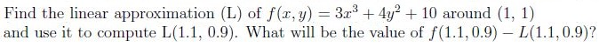
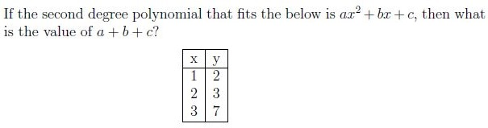
Identify which of the following requires use of classification technique.
- Credit card fraud detection.
- Sentiment analysis.
- Predicting whether an email is spam or not.
- Predicting whether the patient is having cancer or not.
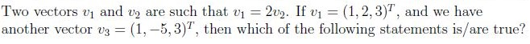
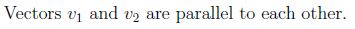
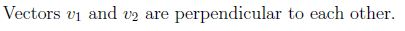
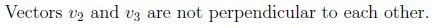
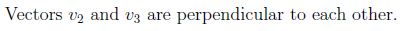
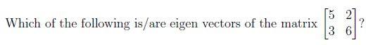
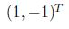
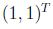
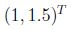
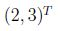
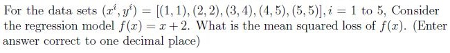
Note: Enter the answer correct to two decimal places.
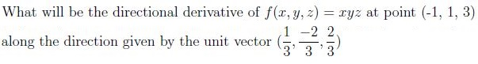
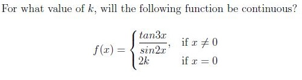
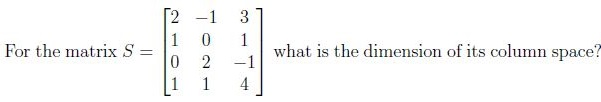
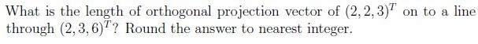
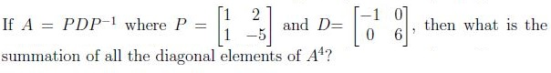
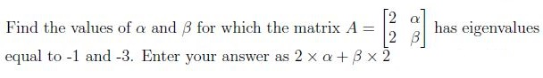
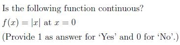
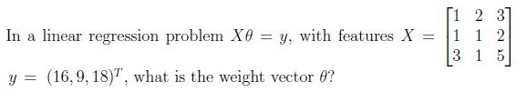
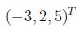
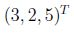
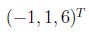
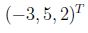
Answer key
- Q1 (MCQ, 0 marks): A
- Q2 (SA, 4 marks): 0.18 to 0.24
- Q3 (SA, 4 marks): 0.10 to 0.16
- Q4 (SA, 4 marks): 2
- Q5 (MSQ, 4 marks): A, B, C, D
- Q6 (MSQ, 4 marks): A, D
- Q7 (MSQ, 4 marks): A, C, D
- Q8 (SA, 3 marks): 2.8
- Q9 (SA, 3 marks): 2.10 to 2.40
- Q10 (SA, 3 marks): 0.75
- Q11 (SA, 3 marks): 3
- Q12 (SA, 3 marks): 4
- Q13 (SA, 3 marks): 1297
- Q14 (SA, 3 marks): -21
- Q15 (SA, 2 marks): 1
- Q16 (MCQ, 3 marks): A
Concepts this paper tests
Auto-generated summary from the source site. Handy as a checklist; the lessons above explain each idea from scratch.
Summary of Core Topics, Concepts, Principles, and Equations
1. Machine Learning Basics
- Classification vs. Regression: Understanding when to use classification techniques (e.g., fraud detection, sentiment analysis) versus regression techniques.
- Loss Functions: Calculating loss for classification models, such as the 0-1 loss function.
2. Linear Algebra
- Vectors and Parallelism: Understanding parallel and perpendicular vectors.
- Eigenvectors and Eigenvalues: Identifying eigenvectors of a matrix.
- Matrix Operations: Diagonalization, , and finding the sum of diagonal elements of .
- Projection Vectors: Calculating the length of the orthogonal projection vector.
- Column Space and Rank: Determining the dimension of the column space of a matrix.
3. Calculus
- Limits and Continuity: Evaluating limits and ensuring continuity of functions.
- Directional Derivatives: Calculating the directional derivative of a function.
4. Regression Analysis
- Linear Regression: Solving for the weight vector in the equation .
- Mean Squared Loss: Calculating the mean squared loss for a regression model.
5. Polynomial Fitting
- Polynomial Coefficients: Solving for the coefficients , , and in a second-degree polynomial .
6. Linear Approximation
- Linear Approximation: Finding the linear approximation of a function around a point .